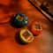

منتخب
سردبیر
مشاهده عناوین بیشتر

جدیدترین
ویدیوها
-
-
-
-
-

-

انتخاب یک مانیتور مناسب برای بازیهای ویدیویی و کاربردهای حرفهای از اهمیت
بالایی برخوردار است. مانیتورهای مختلفی با ویژگیهای متنوع در بازار موجودند
که هر کدام برای نوع خاصی از کاربران مناسب هستند. در این ویدیو، سه مانیتور
برجسته از برند تایوانی کولر مستر یعنی GM25FP، GA22FC و GM34-CWQ2 مورد بررسی
...
بیشتر بخوانید
 رسول خردمندی
رسول خردمندی
لپتاپ MSI Cyborg 15 AI A1VFK یکی از جدیدترین محصولات شرکت MSI است که با
بهرهگیری از فناوریهای پیشرفته و طراحی مدرن، تجربهای متفاوت را برای
کاربران به ارمغان میآورد. این لپتاپ با قابلیتهای برجستهای در زمینه
پردازش، گرافیک و طراحی بدنه، گزینهای مناسب برای گیمرها، طراحان و کاربران
حرفهای به ش ... بیشتر بخوانید
پارسا مقدم
سامسونگ با تولید سری گلکسی بادز توانسته است در بازار هدفونهای بیسیم
جایگاه ویژهای به دست آورد. در این ویدیو، به مقایسه دو مدل محبوب این سری،
یعنی گلکسی بادز 3 پرو و گلکسی بادز 2 پرو، خواهیم پرداخت. این دو محصول با
ویژگیهای خاص خود، طرفداران بسیاری پیدا کردهاند.
فهرست محتوا
کیفیت صدا ...
هژیر غفوری
یکی از ویژگیهای برجسته و کاربردی گوشیهای سامسونگ که ممکن است توسط بسیاری
از کاربران نادیده گرفته شود، قابلیت پنل کناری (Edge Panel) است. این قابلیت
به کاربران امکان میدهد تا دسترسی سریع و آسان به برنامهها، مخاطبین، ابزارها
و اطلاعات دلخواه خود داشته باشند. در ادامه به بررسی این ویژگی، نحوه استفا
...
سپهر طاوسی
تاماکوجی (Tamagotchi) یکی از کنسولهای بازی کوچک و نوستالژیک است که در
دهههای گذشته تأثیری بزرگ بر صنعت بازی و زندگی روزمره بسیاری از افراد گذاشت.
این محصول که اولین بار در سال 1996 توسط شرکت باندای ژاپن عرضه شد، به نوعی
شبیهسازی زندگی واقعی یک حیوان خانگی مجازی است. هدف اصلی این کنسول کوچک،
ارائه ...
پارسا مقدم
نسخه جدید سیستم عامل اپل، iOS 18.2، با مجموعهای از قابلیتهای بهروز و
پیشرفته منتشر شده است. این نسخه تغییرات قابل توجهی در مرورگر سافاری، رابط
کاربری و ابزارهای هوش مصنوعی ایجاد کرده است. در این ویدیو، نگاهی جامع به
ویژگیهای برجسته این نسخه خواهیم داشت.
فهرست محتوا
بهبودهای جدید سافاری د ...
حمید صداقت
جدیدترین
اخبار و مقاله ها
جدیدترین ویدیوها
پیشنهاد برای شما
از تخفیفات شگفتانگیز امروز دیجیکالا جا نمونی!!
از تخفیفات شگفتانگیز امروز دیجیکالا جا نمونی!!
از تخفیفات شگفتانگیز امروز دیجیکالا جا نمونی!!